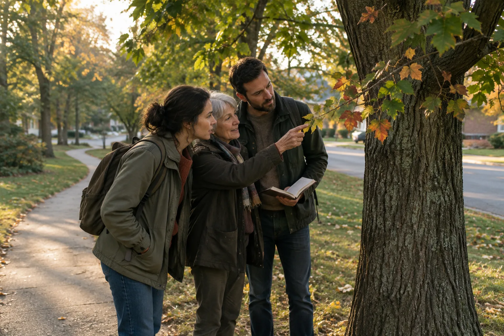
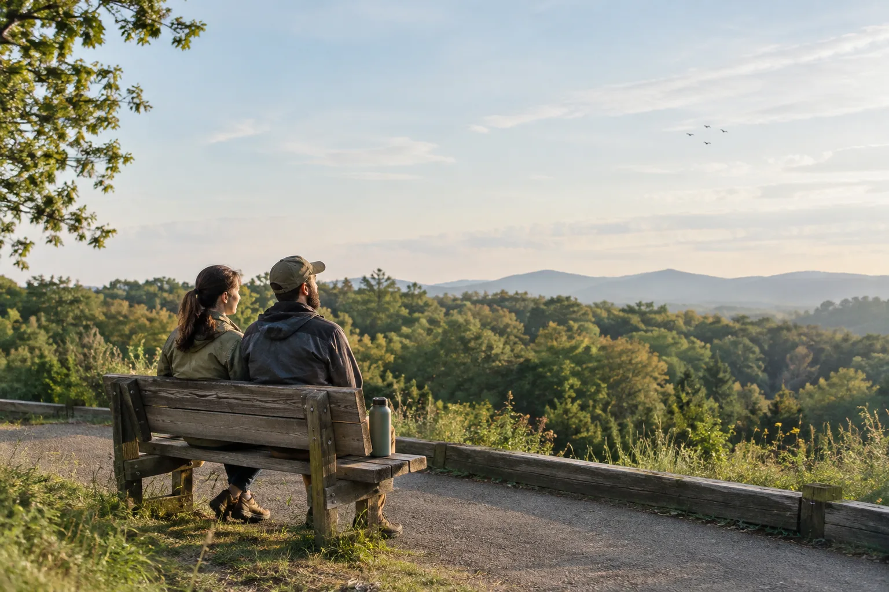
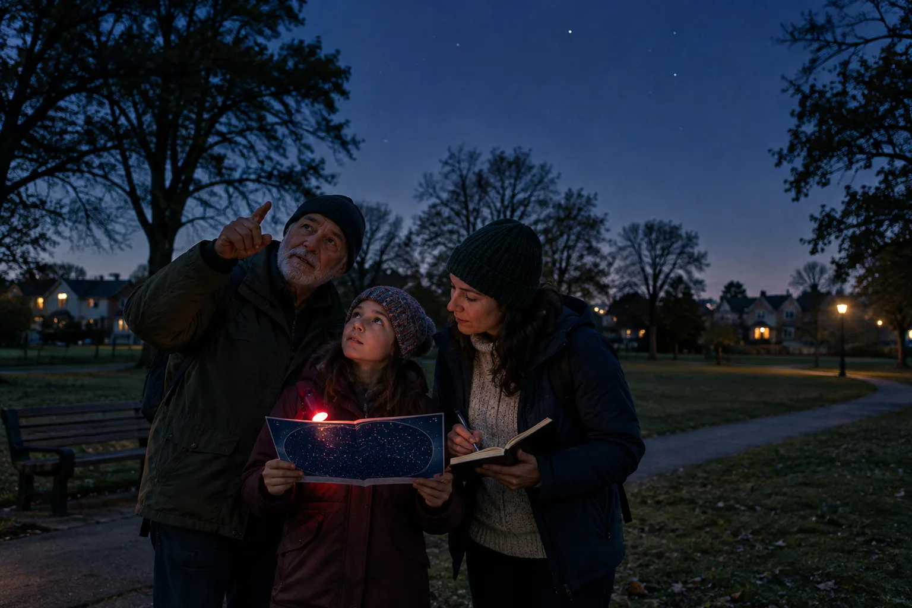

The City Beyond the Blue Dot
Begin by noticing the route itself. Let your phone get you there. Then learn the place between.
A familiar route can become an outing when you give yourself something to notice. These four WILDWIRE stories offer different ways to look at streets, plants, birds and the sky, at your own pace.
Begin by noticing the route itself. Let your phone get you there. Then learn the place between.

Return to one familiar tree and watch what changes. Choose one plant along a familiar route. Return to it over time, notice what has changed, and build a small field record you can share—or contribute to science.

Make room for a pause and a little shared listening. A bench, a few minutes of listening and a shared plan can be enough to make a day outside feel like an adventure.

Take the habit of close looking into the evening. A chart, a few minutes outdoors and a careful note can turn looking up into a useful contribution to citizen science.